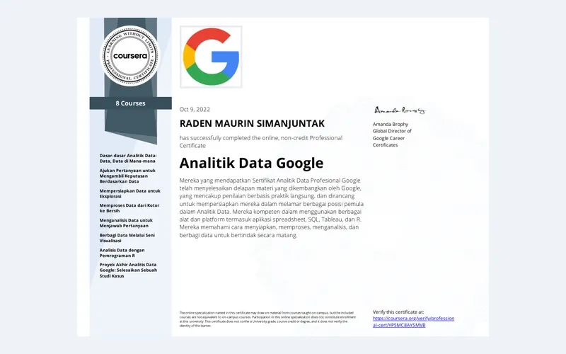
Google Data Analytics Professional Certificate
Google / Coursera · 2022
8-course professional program focused on preparing, analyzing, and communicating data.
SQLData VisualizationEDA
View Certificate (PDF)
Business operations professional with 8+ years of Oil & Gas experience, combining data analysis, project management, and business operations to turn operational data into clear decisions, stronger project visibility, and better execution.
I am a business operations professional transitioning into Data Analytics, bringing more than 8 years of experience in project control, tender management, operational reporting, and stakeholder coordination within the Oil & Gas industry.
Throughout my career, I have worked with project and operational data to monitor performance, track KPIs, identify risks and delays, and support management decision-making. I strengthened this experience through the Full Stack Data Analysis program at RevoU, working with data cleaning, exploratory analysis, SQL, Python, and dashboarding.
I graduated from President University in October 2026 with a Bachelor's degree in Information Systems (GPA 3.62/4.00). Combined with my background in project management and tender operations, this helps me connect analytical findings to practical business decisions across Data Analysis, Project Management, and Business Operations.
Managed project and tender portfolio information, KPI reporting, risk monitoring, and operational visibility across business, legal, and technical functions.
Supported multi-site oil spill remediation and environmental management through structured project information, document traceability, and progress reporting.
Supported enterprise systems and operational applications, troubleshooting technical issues and helping improve business information workflows.
Supported project planning, budget monitoring, progress tracking, and management reporting for upstream Oil & Gas commissioning activities.
Data cleaning, exploratory analysis, KPI reporting, and data visualization using Python, SQL, Tableau, and Streamlit to communicate actionable business insights.
Project planning, milestone tracking, budget monitoring, progress reporting, document controls, and action-item visibility across cross-functional teams.
Connecting project and tender operations with performance monitoring, documentation workflows, process visibility, and business reporting.
Hands-on use of SQL, Python, Streamlit, Supabase PostgreSQL, GitHub, Notion, Monday.com, and ERP systems to structure information and improve operational workflows.
Analysis of project risk, delay, cost, documentation, and compliance information to identify bottlenecks, support follow-up, and recommend corrective actions.
Strong Oil & Gas domain knowledge, stakeholder management, cross-functional coordination, analytical problem solving, and business communication.
Selected work across data analysis, project management, and business operations. Project cards can include presentation, demo, GitHub, or case-study links.
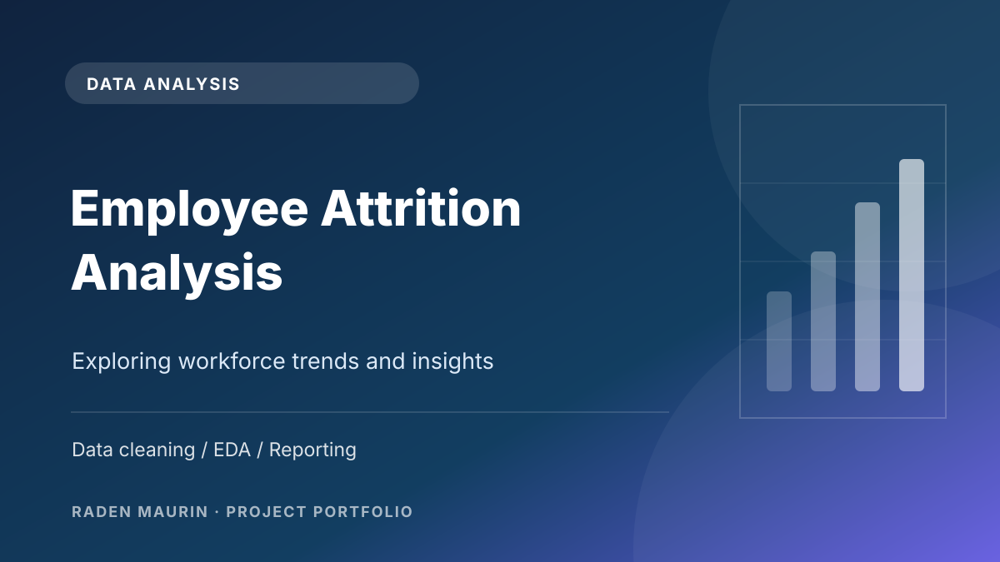
Analytics portfolio project focused on communicating employee attrition findings through a structured business presentation.
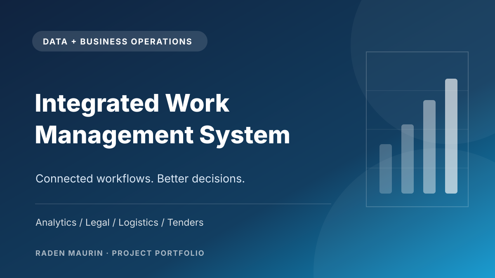
Operational analytics across tender management, legal compliance, and equipment monitoring in an integrated academic system.
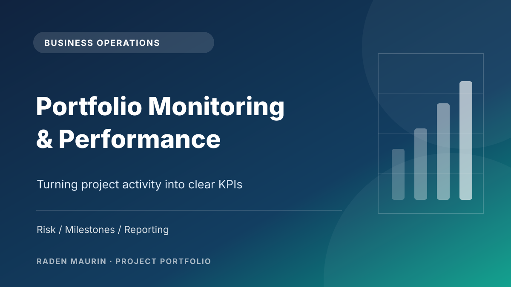
KPI, risk, delay, and operational reporting used to support portfolio-level management decisions.
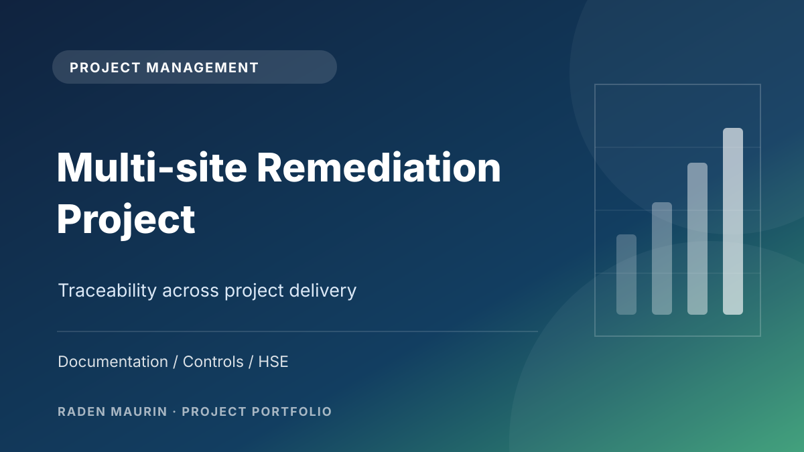
Structured document controls and project information tracking across a multi-site environmental project.
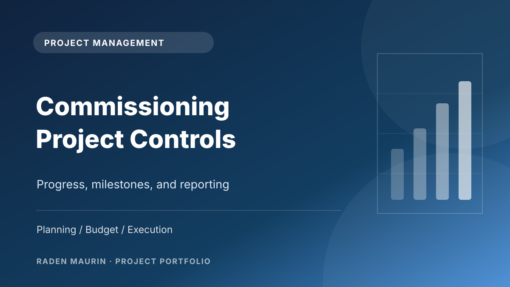
Planning, budget monitoring, progress tracking, and performance reporting for upstream commissioning work.
Industrial project case studies are presented at a high level. No confidential client documentation, operational data, or internal project reports are published.
A curated selection supporting my work in data analysis, project management, and business operations. Original documents are available for review.

Google / Coursera · 2022
8-course professional program focused on preparing, analyzing, and communicating data.
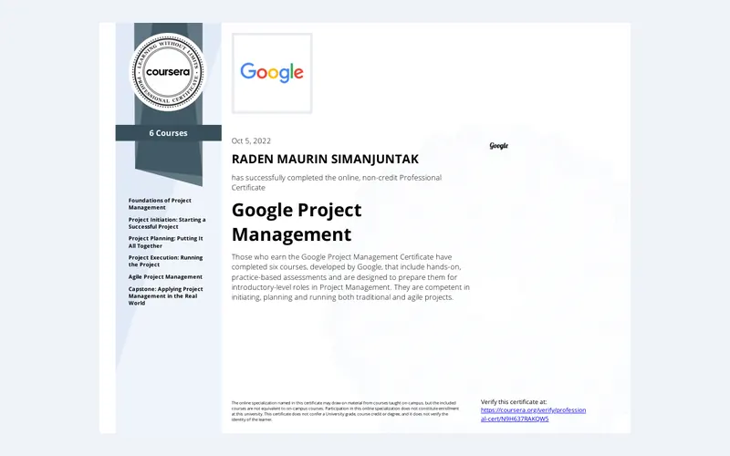
Google / Coursera · 2022
6-course professional program covering planning, execution, Agile, and capstone work.
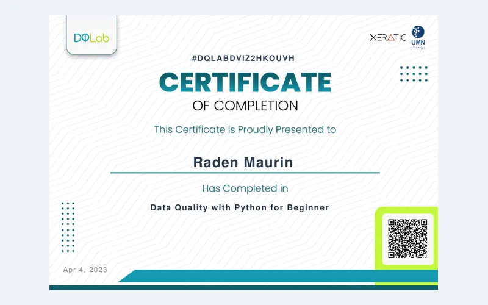
DQLab · 2023
Training in data quality and Python foundations for analytics.
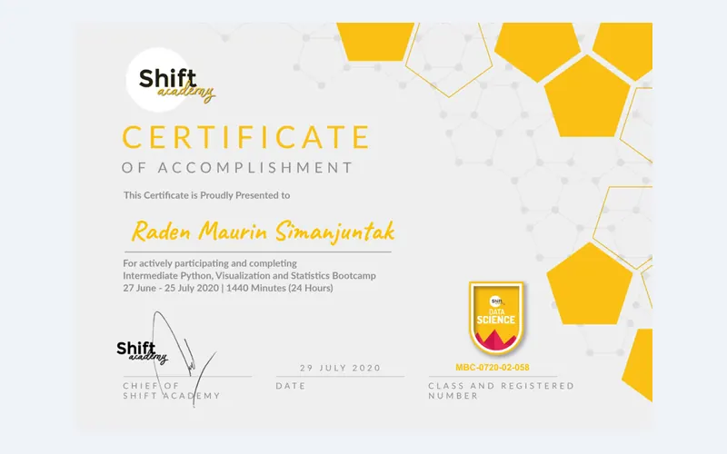
Shift Academy · 2020
24-hour bootcamp on intermediate Python, visualization, and statistics.
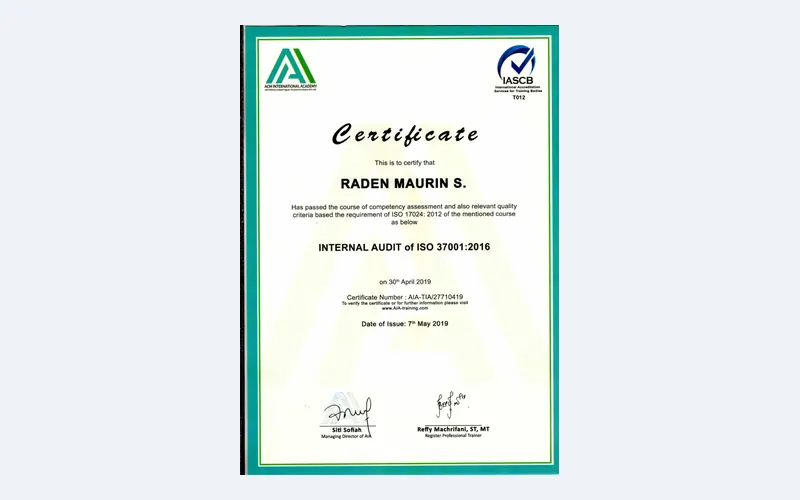
ACM International Academy · 2019
Internal audit training in anti-bribery management systems and governance.
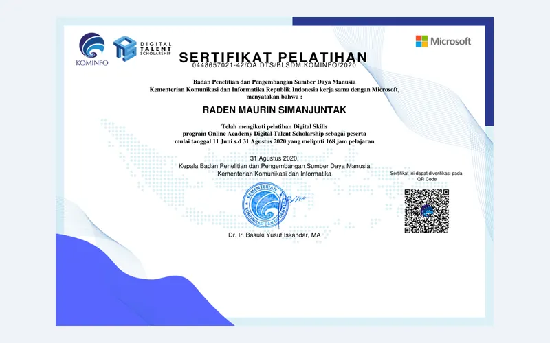
Kominfo / Microsoft · 2020
Digital Skills training delivered through the Kominfo and Microsoft program (168 hours).
Additional historical training records are provided for reference. Some credentials have expired or represent course participation rather than professional licensure.
President University, Cikarang
Graduated October 2026 · GPA 3.62/4.00
Completed a Bachelor's degree in Information Systems, combining business process analysis, databases, enterprise systems, business analytics, and information systems project management.
IPB University, Bogor
Graduated 2016
Diploma in Computer Engineering with a final project on network load balancing and failover implementation at PT PLN (Persero) Udiklat Bogor.
Professional Development Program
Completed 2026
Strengthened practical analytics capability through data cleaning, exploratory analysis, SQL, Python, and interactive dashboard work.
How KPI tracking, data quality, and clear visual reporting can turn operational information into decisions that management can act on.
Read MoreHow structured milestone tracking, risk visibility, and progress reporting support better execution across cross-functional projects.
Read MoreUsing tender activity, deadline, risk, and compliance data to improve portfolio visibility and management follow-up.
Read MoreOpen to Data Analyst, Business Analyst, Project Management / PMO, and Business Operations roles. I am especially interested in work where operational data, project visibility, and business domain knowledge come together.